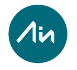
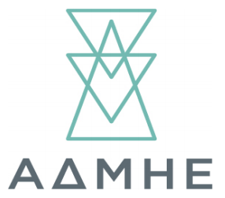
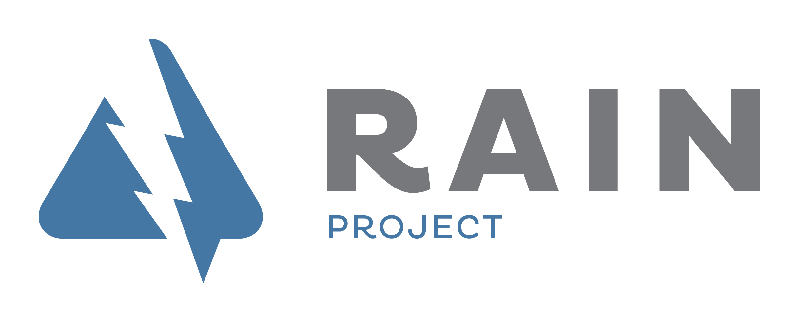

<div>
<ul>
    <li><a href="http://www.aia.es/en/", target ="_blank"> Aplicaciones en Informática Avanzada S.L. (Grupo AIA)</a>. Webtool development, electrical & telecommunications impact assessment, risk assessment assessment and visualization.</li>
    <li><a href="http://www.aia.es/en/", target ="_blank"><a href="http://www.admie.gr/nc/en/home", target ="_blank"> Independent Power Transmission Operator</a>. Electrical </li>
	<li><a href="http://www.geo.fu-berlin.de/met", target ="_blank"> Institute of meteorology Free University of Berlin</a>. Meteorological and climate data.</li>
    <li><a href="http://rain-project.eu/", target ="_blank"> RAIN project partners</a>. All members listed <a href="http://rain-project.eu/consortium/", target ="_blank">here</a></li>
	<li><a href="http://www.openstreetmap.org/copyright", target ="_blank"> OpenStreetMap</a>. Geographical information data.</li>
</ul>
</div>